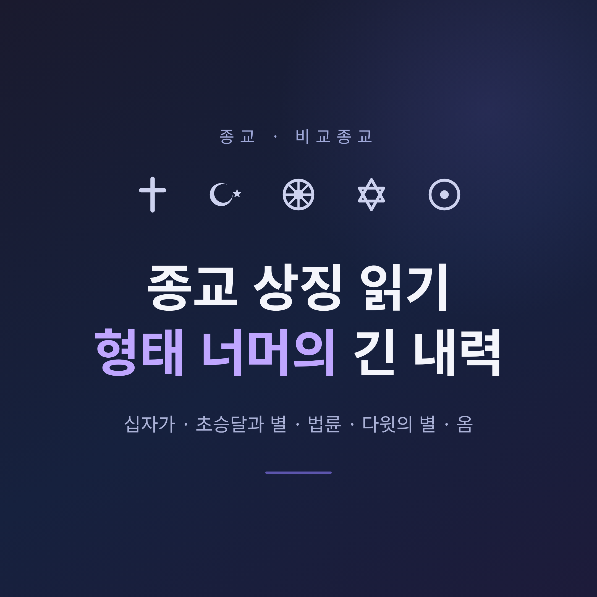
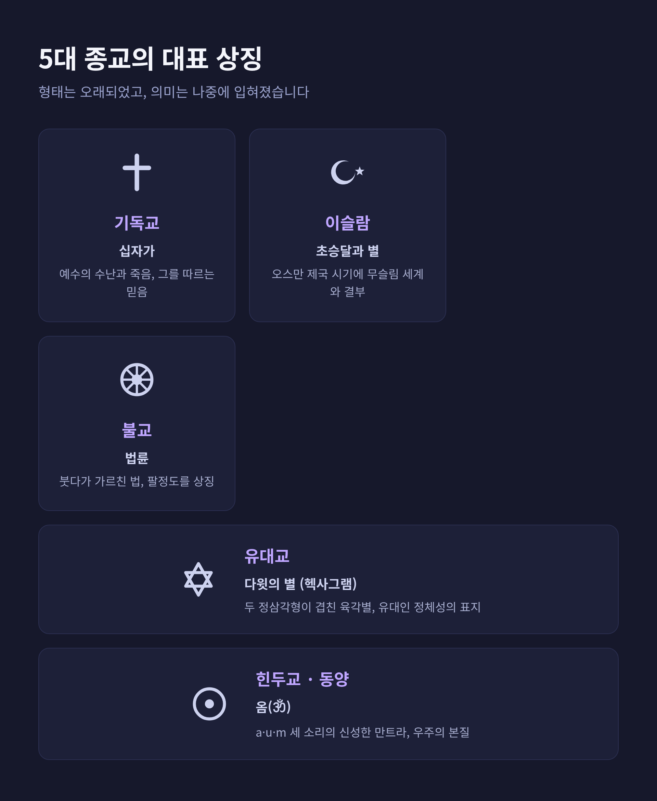
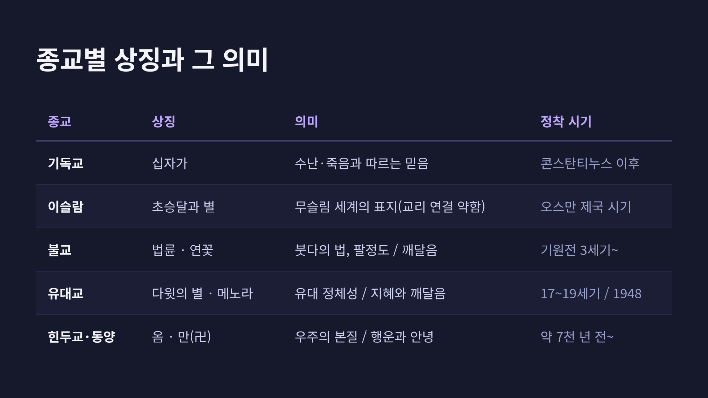
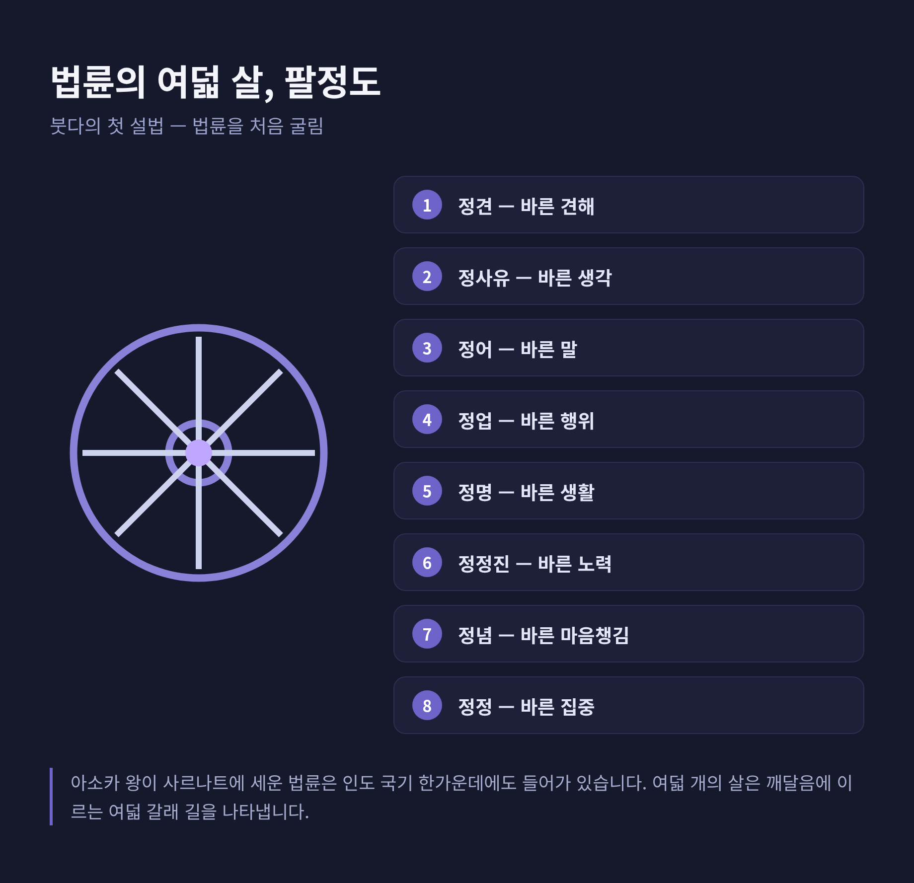

[종교] 종교 상징 읽기 — 십자가·초승달·법륜·다윗의 별에 담긴 의미

세계 종교의 상징을 한자리에 모아 그 기원과 의미를 정리해 보겠습니다. 십자가, 초승달과 별, 법륜, 다윗의 별, 그리고 옴까지. 어느 신앙이 옳고 그른지를 가리려는 글이 아닙니다. 각 상징이 어떤 역사 속에서 어떤 뜻을 얻어 왔는지, 비교종교의 중립적 시선으로 함께 읽어 보려 합니다.
먼저 결론부터 말씀드립니다. 많은 종교 상징은 그 종교보다 형태가 오래되었고, 의미는 나중에 입혀졌습니다. 상징은 고정된 정답이 아니라, 역사적으로 쌓인 의미의 층위입니다.

상징은 종교 안에서 무엇을 하는가
상징과 도상은 세계 모든 종교가 써 온 보편적 표현 수단입니다. 말로 다 담을 수 없는 성스러움의 경험을, 상징은 "가리면서 드러내는" 방식으로 매개합니다.
기능은 분명합니다. 인간과 성스러운 영역 사이의 관계를 유지하고 강화하는 것이지요. 그래서 종교사 연구는 상징을 신앙 표현의 핵심으로 봅니다.
비교종교의 태도는 여기서 출발합니다. 여러 신앙의 상징을 나란히 놓고, 같음과 다름을 함께 살피는 것입니다.
십자가 — 기독교
십자가는 기독교의 핵심 상징입니다. 예수 그리스도의 수난과 죽음, 그리고 그를 따르는 믿음을 나타냅니다. 형태는 세로 기둥이 긴 라틴 십자가, 네 팔이 같은 그리스 십자가 등으로 나뉩니다.
흥미로운 점은 형태 자체가 기독교 이전부터 있었다는 사실입니다. 유럽과 서·남아시아, 고대 이집트의 앙크 등에서 종교 상징으로 쓰였습니다.
예전엔 십자가를 드러내는 데 조심스러웠습니다. 십자가형은 하층민을 처형하던 혐오스러운 형틀이었기 때문입니다. 지금처럼 공경받는 상징이 된 것은 콘스탄티누스 황제 이후입니다. 그가 십자가를 공개적으로 장려하면서, "끔찍한 처형 도구"가 "공적 상징"으로 전환되었습니다.
참고로 십자가에 그리스도의 몸이 함께 표현된 것은 십자고상이라 하여, 빈 십자가와 구별합니다.
초승달과 별 — 이슬람
초승달과 별은 오늘날 여러 이슬람권 국가의 국기와 모스크에서 보입니다. 다만 이 통용이 굳어진 것은 비교적 최근이며, 그 정당성을 두고는 이견이 있습니다.
이 도상의 기원은 이슬람보다 수천 년 앞섭니다. 중앙아시아·시베리아의 천체 숭배, 근동의 여신 숭배에서 쓰였고, 고대 도시 비잔티움에서 발전했다는 설이 있습니다.
예언자 무함마드 시대에는 공인된 상징이 없었습니다. 초기 이슬람 군대는 단색 깃발을 썼습니다. 초승달과 별이 무슬림 세계와 결부된 것은 오스만 제국 시기입니다. 1453년 콘스탄티노플 정복 때 그 도시의 상징을 받아들였다는 설명이 일반적입니다만, 오스만이 그 이전부터 사용했다는 기록도 있습니다.
그래서 학계는 "초승달이 본래부터 이슬람 고유의 상징인가"에 신중합니다. 십자가가 교리와 직접 연결되는 것과 달리, 초승달을 이슬람 교리에 잇는 견고한 고리는 약하다는 지적입니다. 상당수 무슬림이 이를 이슬람의 상징으로 보기를 거부하는 까닭이기도 합니다.

법륜과 연꽃 — 불교
법륜은 불교에서 가장 오래되고 보편적인 상징입니다. 붓다의 형상보다도 앞서며, 붓다가 가르친 법을 나타냅니다.
바퀴는 본래 고대 인도에서 왕권의 상징이었습니다. 기원전 3세기 아소카 왕이 사르나트에 세운 법륜이 대표적이며, 24개 살의 이 법륜은 오늘날 인도 국기 한가운데에도 들어가 있습니다.
붓다가 사르나트에서 행한 첫 설법을 "법륜을 처음 굴림"이라 부릅니다. 이 첫 가르침이 사성제와 팔정도를 제시했습니다. 그래서 법륜은 흔히 여덟 개의 살로 그려져 팔정도를 상징합니다.
연꽃은 깨달음의 상징입니다. 진흙탕에서 자라면서도 더럽혀지지 않는 연꽃처럼, 깨달은 이는 세상의 고통 속에 있으되 그것에 물들지 않습니다. 연꽃은 힌두교 도상에서도 중요하여, 인도계 종교가 공유하는 상징이기도 합니다.

다윗의 별과 메노라 — 유대교
다윗의 별은 두 정삼각형이 겹친 육각별, 곧 헥사그램입니다. 오늘날 유대인 정체성과 유대교를 대표하는 표지로 널리 인식됩니다.
그 기원은 복잡하고 논쟁적입니다. 헥사그램은 본래 유대교 고유 상징이 아니었습니다. 고대에는 마법적 표식이나 장식으로 쓰였고, 유대인에게 국한되지 않았습니다. 프라하 유대 공동체가 이 별을 공식 상징으로 처음 썼고, 17세기부터 여러 공동체의 표지가 되었습니다. 19세기에는 기독교의 십자가에 견줄 강렬한 표상으로 거의 보편적으로 채택됩니다.
오히려 더 오래된 본래의 상징은 메노라입니다. 일곱 가지 촛대인 메노라는 히브리 성서에 그 설계가 기술되며, 탈무드는 이를 인간의 지혜와 깨달음의 상징으로 풀이합니다. 1948년 이스라엘 건국 때 국가 공식 엠블럼이 되었습니다.
옴과 만(卍) — 힌두교와 동양
옴은 인도계 종교의 신성한 소리이자 만트라입니다. a·u·m 세 소리로 이루어져 여러 삼원을 상징하며, 지고의 절대와 우주의 본질을 담는다고 봅니다. 불교와 자이나교 의례에서도 쓰이는, 공유된 신성 음절입니다.
만(卍)은 정확히 다루어야 할 상징입니다. 산스크리트 svastika에서 왔으며, 뜻은 "행운, 안녕"입니다. 유라시아에서 약 7천 년 전부터 쓰인 길상 상징으로, 오늘날에도 힌두교·불교·자이나교에서 신성하게 쓰입니다. 불교에서는 붓다의 발자취를, 힌두교에서는 태양과 번영을 상징합니다.
여기서 한 가지는 분명히 구별해야 합니다. 나치는 1920년 비슷한 형태를 도용해 하켄크로이츠라 불렀고, 그 학살의 유산이 이 문양을 증오의 상징으로 변질시켰습니다. 그러나 아시아의 길상 만(卍)과 나치의 하켄크로이츠는 기원·맥락·의미가 전혀 다릅니다. 형태가 닮았다는 이유로 둘을 혼동하지 않는 것이 정확한 이해입니다.
정리하면 이렇습니다. 다섯 전통의 상징은 형태가 오래되고 의미가 나중에 부여되었다는 공통점, 그리고 교리와의 연결 강도라는 차이를 함께 보여 줍니다.
어느 상징이 "더 진짜"인지를 따지는 일은 큰 의미가 없습니다. 중요한 것은 각 상징이 걸어온 역사를 읽는 일입니다.
— 상징을 읽는다는 것은, 그 안에 쌓인 시간을 함께 읽는 일입니다.
다음에 어느 종교의 표지를 마주하신다면, 그 형태 너머의 긴 내력을 한 번쯤 떠올려 보시면 좋겠습니다.